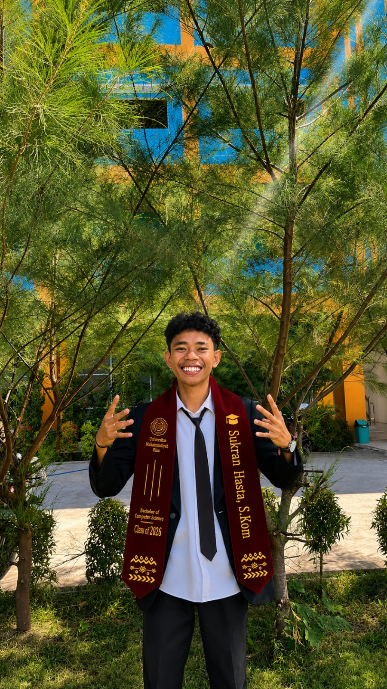
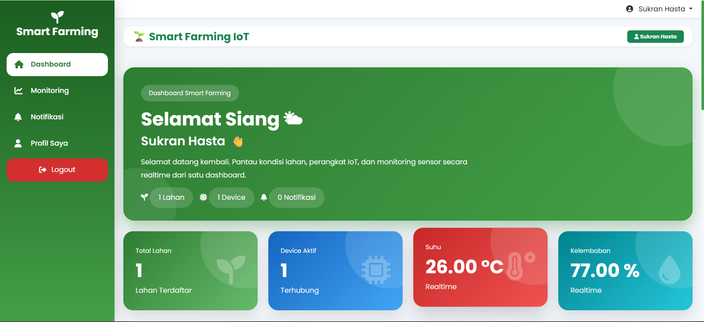
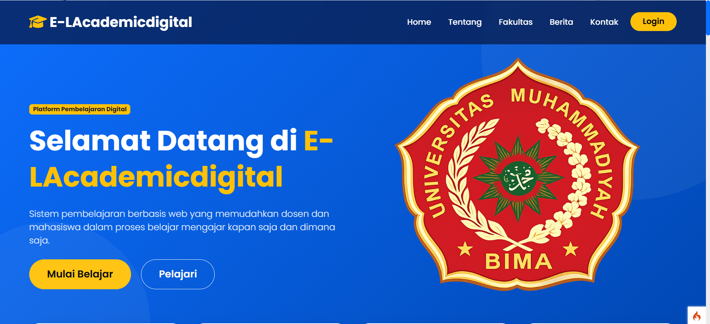
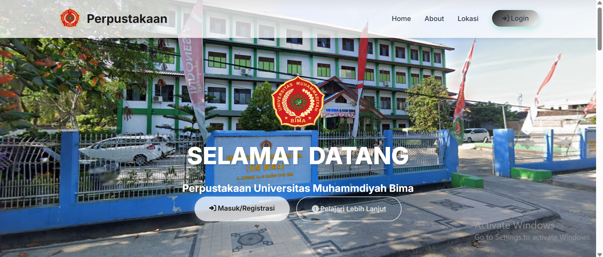
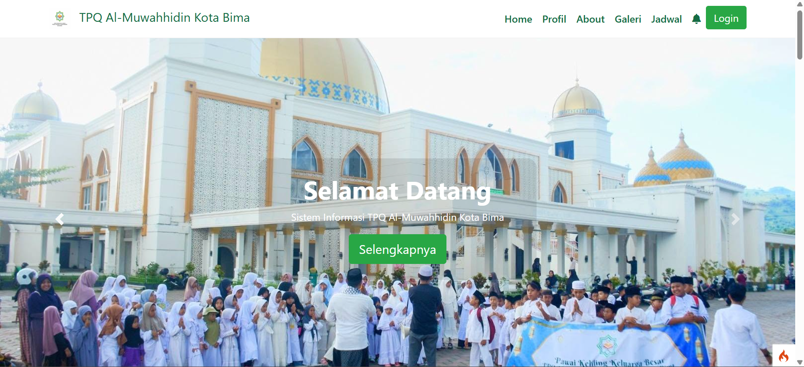
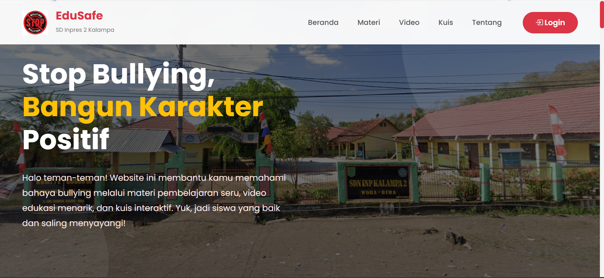
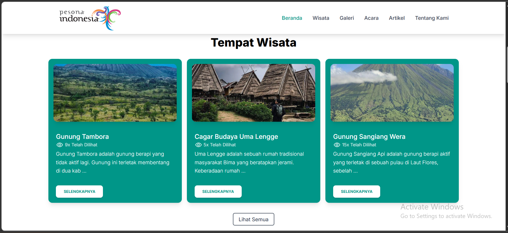
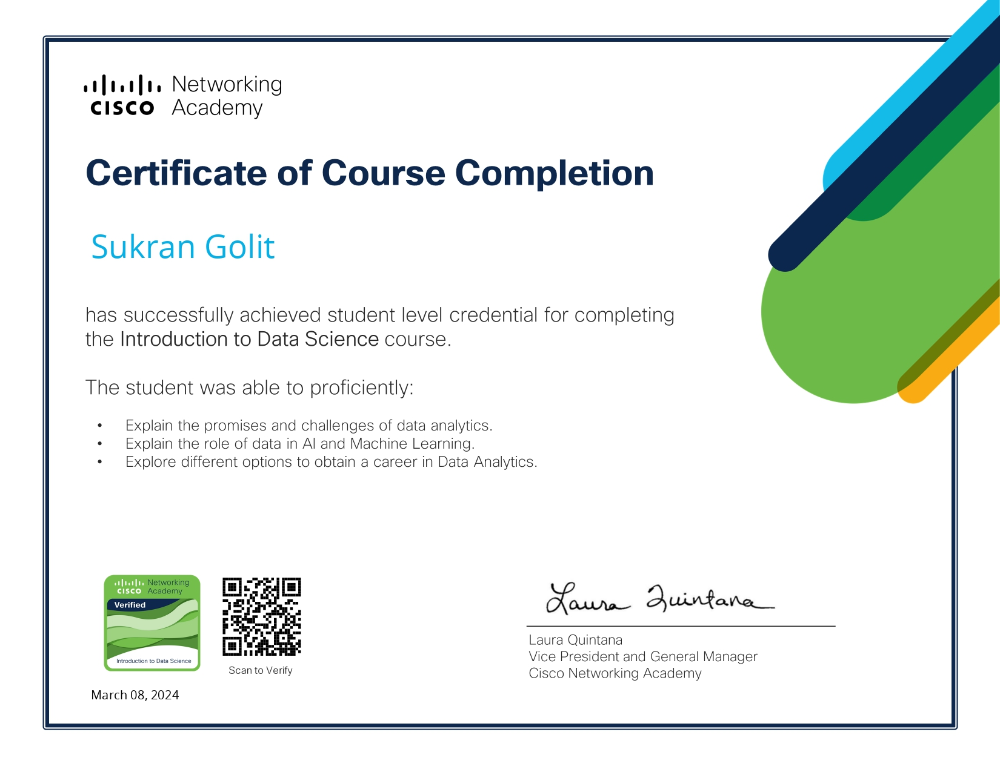
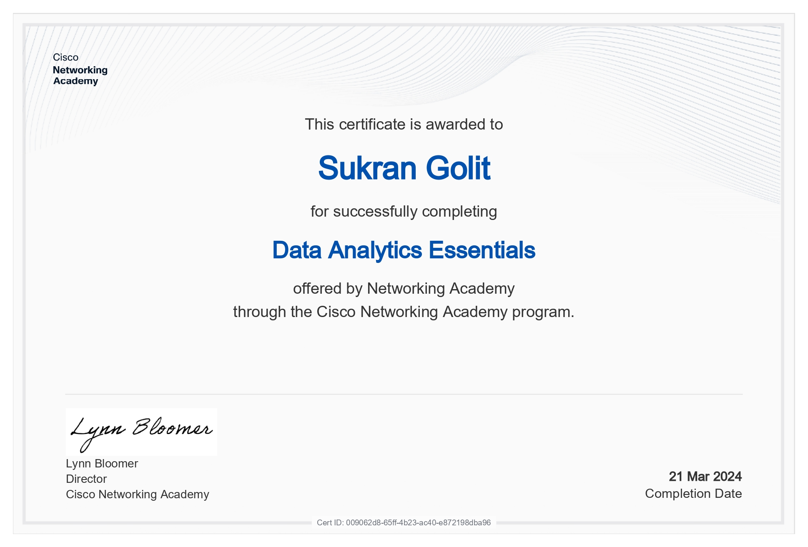

Universitas Muhammadiyah Bima
S1 Ilmu Komputer
Lulus · 2026Halo! Saya Hasta Sukran, lulusan S.Kom dari Program Studi Ilmu Komputer, Universitas Muhammadiyah Bima. Saya memiliki ketertarikan dalam pengembangan website, sistem informasi, pengelolaan database, dan teknologi Internet of Things. Saya senang mempelajari teknologi baru serta mengubah ide menjadi aplikasi yang fungsional dan bermanfaat.

Sedikit cerita tentang latar belakang dan perjalanan saya.
Saya merupakan lulusan Program Studi Ilmu Komputer, Universitas Muhammadiyah Bima. Saya memiliki minat pada pengembangan aplikasi web, perancangan sistem informasi, pengelolaan basis data, dan teknologi IoT.
Dalam mengerjakan proyek, saya berusaha memahami kebutuhan pengguna, menyusun solusi, kemudian mengimplementasikannya menjadi sistem yang mudah dipahami dan digunakan.
Jelajahi Proyek SayaS1 Ilmu Komputer
Lulus · 2026Website dan sistem informasi
PHP · CodeIgniter · MySQLMonitoring sensor dan integrasi perangkat
ESP32 · API · IoTMusik yang menemani proses belajar dan mengerjakan berbagai proyek. Dengarkan daftar putar favorit saya.
Buka di SpotifyBeberapa proyek pengembangan sistem dan aplikasi yang pernah saya kerjakan.

01Sistem monitoring kondisi lingkungan pertanian menggunakan sensor dan ESP32, dengan data yang dikirim ke website melalui API.
Aplikasi Web Berbasis IoT
02Platform pembelajaran berbasis web dengan pengelolaan pengguna, kelas, mata kuliah, materi, dan aktivitas pembelajaran.
Aplikasi Berbasis Web
03Sistem layanan perpustakaan untuk pengelolaan buku, peminjaman, pengembalian, denda, dan repository skripsi.
Proyek Akhir · Artikel Terpublikasi
04Aplikasi pengelolaan data santri, ustadz, dan aktivitas pembelajaran pada TPQ.
Aplikasi Berbasis Web
05Website edukasi dan pengelolaan informasi untuk mendukung upaya pencegahan perundungan.
Aplikasi Berbasis Web
06Pengembangan website informasi pariwisata dengan penyajian konten dan informasi destinasi.
Pengembangan Website
Sertifikat pelatihan terkait dasar-dasar analisis data dan pengolahan informasi.
Penyelenggara: Isi nama lembaga
Isi deskripsi singkat mengenai pelatihan atau kompetensi yang diperoleh.
Penyelenggara: Isi nama lembagaMenyelesaikan pendidikan S1 Program Studi Ilmu Komputer di Universitas Muhammadiyah Bima.
2026Artikel ilmiah berjudul "Perancangan dan Pengembangan Website Inovatif untuk Optimalisasi Layanan Perpustakaan Universitas Muhammadiyah Bima".
Jurnal RABIT · 2026 Lihat PublikasiPunya ide atau ingin berdiskusi? Silakan hubungi saya melalui informasi berikut.
Isi formulir berikut untuk menghubungi saya melalui WhatsApp.
Terima kasih telah mengunjungi portofolio saya!